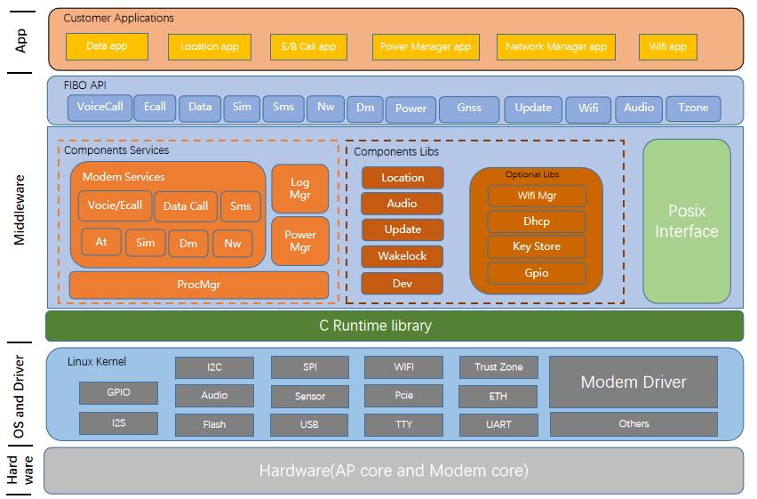
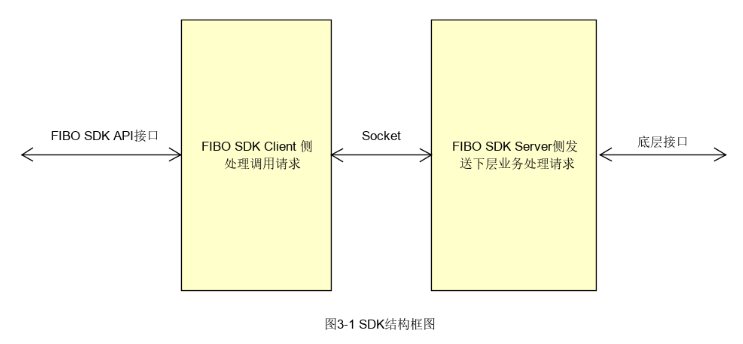
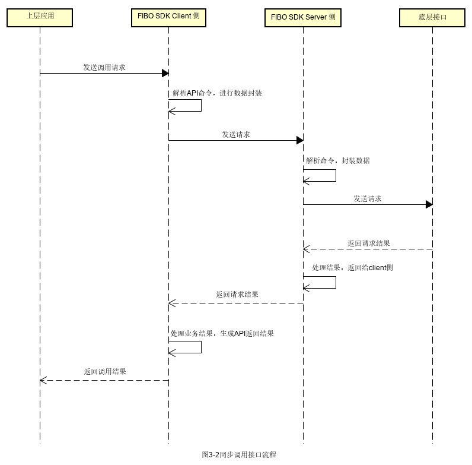

03 MT8676 Favalon SDK 与 UMDP
本章于 2026-09-20 按原架构补充正文解释；原图、模块/流程 ID 和分层保持原样。新证据的版本限定随段落标注。本轮更新说明。
3.1 版本和证据边界
本章的 Favalon 软件开发套件（Software Development Kit，SDK）基线为 V1.0.166，UMDP 基线为 V1.0.226。SDK 指南明确写出 SDK 运行在 Middleware 层、采用 Client/Server 架构，提供同步调用和回调两种方式，同步接口有 超时处理，接口语义通常分为 GET、SET、REGISTER。[可信度：MT8676 资料确认] [证据：sdk-mt8676-guide]
UMDP README 明确 project: mt8676、版本 V1.0.226，并说明合入
meta/poky/meta/recipes-core/fibo-umdp；recipe、systemd unit、配置和归档清单
进一步证明包内的服务、库和安装方式。[可信度：MT8676 资料确认]
[证据：umdp-readme-v1-0-226-txt] [证据：umdp-fibo-umdp-bb]
必须把两个版本快照分开阅读：V1.0.166 示例证明该 SDK 归档中的业务家族和调用用法；
V1.0.226 UMDP 集成头文件证明 226 包的兼容性接口面。当前没有同版本头文件对照或
兼容性声明，不能把 226 头文件当作 166 的精确 API 合同；两者精确接口一致性
[可信度：待 MT8676 确认]，需版本化头文件、ABI/符号差异或供应商兼容性说明。
本章只说明架构与生命周期，不制作逐函数参考手册。示例代码可以证明“API 如何被 调用”，不能证明量产应用采用相同等待、重试、线程、错误处理或恢复策略。
3.2 Favalon SDK 在系统中的位置
SDK 指南把它定义为业务模块和上层应用之间的桥梁：上层调用 Client 侧 API， Client 把请求发到 Server，Server 转换和封装业务请求，再调用下层业务接口。 [可信度：MT8676 资料确认] [证据：sdk-mt8676-guide]

原图能证明 Customer Application、FIBO SDK API、中间件、Common Services、 System Lib/Common Lib、Post Interface、OS/Driver 与 Hardware/AP/Modem core 处于分层关系。[可信度：MT8676 资料确认] [证据：sdk-image-sdk-architecture-diagram-png]
原图不能证明每个彩色小框是独立进程，不能给出全部 .so 的加载关系，也不能证明
某个业务 API 最终调用哪个私有驱动。具体映射仍需二进制依赖、服务注册和运行日志。
展开架构图（原图代码保留）
flowchart LR APP["Upper Application"] --> API["Favalon SDK API"] API --> CL["FIBO SDK Client"] CL <-->|"Socket"| SV["FIBO SDK Server"] SV --> LOW["Lower Business Interface"] LOW -. "result/event" .-> SV SV -. "response/callback" .-> CL CL -. "return/callback" .-> APP
查看原始图代码
flowchart LR
APP["Upper Application"] --> API["Favalon SDK API"]
API --> CL["FIBO SDK Client"]
CL <-->|"Socket"| SV["FIBO SDK Server"]
SV --> LOW["Lower Business Interface"]
LOW -. "result/event" .-> SV
SV -. "response/callback" .-> CL
CL -. "return/callback" .-> APP该图只重画 V1.0.166 SDK 指南确认的通用 Client/Server 结构：实线表示请求方向，
虚线表示返回或回调；Client 与 Server 间的 Socket 来自结构图。这里的
FIBO SDK Server 不与任何具体 fb_* 进程合并命名，也不声明某个 UMDP 库的加载
或调用关系。[可信度：MT8676 资料确认]
[证据：sdk-mt8676-guide] [证据：sdk-image-sdk-structural-diagram-png]
3.3 Client/Server 结构和库/服务边界

结构图明确给出：
- 左侧是 FIBO SDK API 入口；
FIBO SDK Client 侧负责处理调用请求；- Client 与
FIBO SDK Server 侧之间标注Socket； - Server 侧处理并发送下层业务请求；
- 右侧通过底层接口继续下行。
[可信度：MT8676 资料确认] [证据：sdk-image-sdk-structural-diagram-png]
这张图证明的是结构边界，不证明 Socket 类型、地址、协议字段、队列深度、线程数、 认证方式或服务发现机制。诊断时应把 Client 进程、Client Library、Socket 会话、 Server 进程和下层接口作为五个不同检查点。
3.4 API 家族：两个版本快照分列
V1.0.166 示例可证明归档中存在对应家族及调用用法；V1.0.226 UMDP 集成头文件只证明
226 包内兼容性接口面。表中的两列不可互相替代，精确签名、枚举、字段和超时的跨版本
一致性 [可信度：待 MT8676 确认]。
| 家族 | 处理对象（家族级） | V1.0.166 示例证据 | V1.0.226 UMDP 集成头文件 |
|---|---|---|---|
| AT | AT 命令 | [证据：sdk-example-at-test-at-test-c] | [证据：umdp-files-umdp-include-fibo-sdk-fibo-at-h] |
| Audio | 模组/通话音频 | [证据：sdk-example-audio-test-audio-test-c] | [证据：umdp-files-umdp-include-fibo-sdk-fibo-audio-h] |
| Data | 数据调用 | [证据：sdk-example-data-test-data-test-c] | [证据：umdp-files-umdp-include-fibo-sdk-fibo-data-h] |
| Device Management | 设备管理 | [证据：sdk-example-dm-test-dm-test-c] | [证据：umdp-files-umdp-include-fibo-sdk-fibo-dm-h] |
| IMU | 惯性传感器 | [证据：sdk-example-imu-test-imu-test-c] | [证据：umdp-files-umdp-include-fibo-sdk-fibo-imu-h] |
| Location/GNSS | 定位 | [证据：sdk-example-gnss-test-gnss-test-c] | [证据：umdp-files-umdp-include-fibo-sdk-fibo-location-h] |
| Log | 日志 | [证据：sdk-example-log-test-log-test-c] | [证据：umdp-files-umdp-include-fibo-sdk-fibo-log-h] |
| Network | 网络注册/状态 | [证据：sdk-example-nw-test-nw-test-c] | [证据：umdp-files-umdp-include-fibo-sdk-fibo-nw-h] |
| Power | 电源 | [证据：sdk-example-power-test-power-test-c] | [证据：umdp-files-umdp-include-fibo-sdk-fibo-power-h] |
| SIM | 卡状态与操作 | [证据：sdk-example-sim-test-sim-test-c] | [证据：umdp-files-umdp-include-fibo-sdk-fibo-sim-h] |
| SMS | 短信 | [证据：sdk-example-sms-test-sms-test-c] | [证据：umdp-files-umdp-include-fibo-sdk-fibo-sms-h] |
| Timer | 定时器 | [证据：sdk-example-timer-test-timer-test-c] | [证据：umdp-files-umdp-include-fibo-sdk-fibo-timer-h] |
| Voice/eCall | 语音/紧急呼叫 | [证据：sdk-example-voice-test-voice-test-c] | [证据：umdp-files-umdp-include-fibo-sdk-fibo-voice-h] |
| WakeLock | 唤醒锁 | [证据：sdk-example-wakelock-test-wakelock-test-c] | [证据：umdp-files-umdp-include-fibo-sdk-fibo-wakelock-h] |
| Wakeup | 唤醒 | [证据：sdk-example-wakeup-test-wakeup-test-c] | [证据：umdp-files-umdp-include-fibo-sdk-fibo-wakeup-h] |
家族名称和示例入口属于 V1.0.166 归档事实。[可信度：MT8676 资料确认] 226 头文件中的 具体函数、结构体、枚举和注释只能作为 UMDP V1.0.226 集成快照，不写成 166 合同。 服务归并和二进制绑定需版本化头文件、ABI 符号表、IDL、配置或运行追踪确认。
3.5 GET、SET、REGISTER 三种语义
资料核对后的架构解释（2026-09-20）
GET/SET/REGISTER 的调用语义要叠加具体服务的 ready 条件。作为新平台对照，MT8668 TBox 手册要求除 ML_GetModemStat 外的接口依赖 modem ready；这不能直接替换原 Favalon API 名称，但解释了“IPC 已连接，业务调用仍失败”的分层原因。SET 的返回只按该 API 合同解释，若它仅表示接收成功，应另取状态回读/回调验证业务生效。S075 · MT8668_Yocto_T-Box_User_Manual_CN_V1.0.pdf · PDF第5-7页〔本地来源〕
V1.0.166 指南直接确认接口服务通常分为 GET、SET、REGISTER，并确认设置、查询类接口 为同步调用。[可信度：MT8676 资料确认] [证据：sdk-mt8676-guide]
GET
GET 在通用接口设计中表示查询状态或配置，调用方提交查询并接收结果。 [可信度：标准机制推断] 结果来自 Server 缓存、实时下层查询还是其他来源，以及返回值 的新鲜度保证，当前指南未定义；需 V1.0.166 版本化头文件、服务实现合同或带时间戳的 运行追踪确认。[可信度：待 MT8676 确认]
SET
SET 在通用接口设计中表示请求修改配置或触发动作。[可信度：标准机制推断] 同步返回 成功究竟代表 Client 接收、Server 受理、下层完成还是硬件生效，不能从指南推出； 需当前接口合同、实现源码和执行回读确认。[可信度：待 MT8676 确认]
REGISTER
REGISTER 通常用于建立事件订阅或回调关系；服务重启后旧 Session/Handle 和注册是否 继续有效属于实现合同。[可信度：标准机制推断] V1.0.166 的 Network、SIM、SMS、 Data、Voice 和 Device Management 示例能证明这些归档示例存在 Client 初始化、 服务事件回调或事件注册用法，不证明量产自动重连策略。 [可信度：MT8676 资料确认] [证据：sdk-example-nw-test-nw-test-c] [证据：sdk-example-sim-test-sim-test-c] [证据：sdk-example-sms-test-sms-test-c] [证据：sdk-example-data-test-data-test-c] [证据：sdk-example-voice-test-voice-test-c] [证据：sdk-example-dm-test-dm-test-c]
3.6 Client 生命周期
不同家族的函数命名并不完全一致，但架构生命周期可归纳为：
- 进程启动并加载 Client Library；
- 调用模块初始化或创建 Client/Handle；
- 必要时注册服务事件回调和业务事件回调；
- 执行 GET/SET 或异步请求；
- 消费返回值、响应和事件；
- 取消订阅、停止活动业务；
- deinit/release，使 Handle、回调和资源失效。
Voice 示例展示 fibo_voice_client_init、Handle 使用、服务事件回调和
fibo_voice_client_deinit；DM、Network、SMS、Data 等也采用类似结构。
[可信度：MT8676 资料确认] [证据：sdk-example-voice-test-voice-test-c]
[证据：sdk-example-dm-test-dm-test-c] [证据：sdk-example-nw-test-nw-test-c]
“类似结构”不代表所有家族共享同一个 Handle 或释放函数。调用方必须按当前头文件 管理每个家族资源，不能跨模块复用失效对象。
3.7 成功的同步调用

原图证明上层调用进入 Client，Client 组织请求发给 Server，Server 调用底层接口， 底层结果回到 Server，再经 Client 返回上层；图中还表现了同步等待和超时处理阶段。 [可信度：MT8676 资料确认] [证据：sdk-image-sync-timing-diagram-png]
它不证明所有接口使用同一个超时值，也不证明业务动作在返回时已经完成。具体接口的 返回语义必须查当前版本头文件。
展开架构图（原图代码保留）
sequenceDiagram participant App as Upper Application participant Client as Favalon Client participant Server as SDK Server participant Lower as Lower Platform App->>Client: GET/SET request Client->>Client: 校验参数/建立等待上下文 Client->>Server: 序列化请求 Server->>Lower: 转换并调用底层接口 Lower-->>Server: 执行结果/数据 Server-->>Client: response Client->>Client: 按请求上下文匹配并解除等待 Client-->>App: 返回值与输出参数
查看原始图代码
sequenceDiagram
participant App as Upper Application
participant Client as Favalon Client
participant Server as SDK Server
participant Lower as Lower Platform
App->>Client: GET/SET request
Client->>Client: 校验参数/建立等待上下文
Client->>Server: 序列化请求
Server->>Lower: 转换并调用底层接口
Lower-->>Server: 执行结果/数据
Server-->>Client: response
Client->>Client: 按请求上下文匹配并解除等待
Client-->>App: 返回值与输出参数请求下行箭头表示同步链的调用方向，虚线返回表示结果回传。Client 内部的“等待上下文” 表示同步 API 需要配对响应，不代表已知其私有实现。成功条件至少包括请求发出、Server 处理、响应配对和上层得到有效返回。[可信度：MT8676 资料确认] [证据：sdk-mt8676-guide]
3.8 超时、迟到响应和服务不可用
展开架构图（原图代码保留）
sequenceDiagram
participant App as Upper Application
participant Client as Favalon Client
participant Server as SDK Server
participant Lower as Lower Platform
App->>Client: 同步请求
alt Server 不可用/Socket 失败
Client-->>App: 连接或服务错误
else 请求已发送
Client->>Server: request
Server->>Lower: lower request
alt 期限内响应
Lower-->>Server: result
Server-->>Client: response
Client-->>App: success/error result
else 等待到期
Client-->>App: timeout
Lower-->>Server: late result
Server-->>Client: late response
Client->>Client: 丢弃或隔离旧请求（策略待确认）
end
end查看原始图代码
sequenceDiagram
participant App as Upper Application
participant Client as Favalon Client
participant Server as SDK Server
participant Lower as Lower Platform
App->>Client: 同步请求
alt Server 不可用/Socket 失败
Client-->>App: 连接或服务错误
else 请求已发送
Client->>Server: request
Server->>Lower: lower request
alt 期限内响应
Lower-->>Server: result
Server-->>Client: response
Client-->>App: success/error result
else 等待到期
Client-->>App: timeout
Lower-->>Server: late result
Server-->>Client: late response
Client->>Client: 丢弃或隔离旧请求（策略待确认）
end
end外层 alt 区分“根本没有可用 Server”与“请求已进入链路但未按期返回”。迟到响应是否
被 Client 丢弃、是否携带 Request ID、是否会触发其他回调，当前结构图没有说明，
需要 Client 实现或带关联 ID 的日志确认。[可信度：待 MT8676 确认]
同步超时只说明调用方没有在合同期限内得到匹配响应，不自动证明下层没有执行。对 SET 或拨号类动作，超时后盲目重试可能造成重复操作；应先查询状态或用幂等/请求标识确认。 [可信度：标准机制推断]
3.9 回调注册、事件和服务重启
展开架构图（原图代码保留）
sequenceDiagram participant App as Upper Application participant Client as Favalon Client participant Server as SDK Server participant Supervisor as systemd/fb_procMgr App->>Client: init/create handle App->>Client: REGISTER callback/event Client->>Server: 建立订阅 Server-->>Client: event Client-->>App: callback Server-xServer: process death Supervisor->>Server: restart Server-->>Client: 新服务实例 Ready Client-->>App: service state event（若合同提供） App->>Client: 重建/确认 Handle App->>Client: 重新 REGISTER Client->>Server: 建立新代际订阅 Server-->>Client: new event Client-->>App: callback with new generation
查看原始图代码
sequenceDiagram
participant App as Upper Application
participant Client as Favalon Client
participant Server as SDK Server
participant Supervisor as systemd/fb_procMgr
App->>Client: init/create handle
App->>Client: REGISTER callback/event
Client->>Server: 建立订阅
Server-->>Client: event
Client-->>App: callback
Server-xServer: process death
Supervisor->>Server: restart
Server-->>Client: 新服务实例 Ready
Client-->>App: service state event（若合同提供）
App->>Client: 重建/确认 Handle
App->>Client: 重新 REGISTER
Client->>Server: 建立新代际订阅
Server-->>Client: new event
Client-->>App: callback with new generation前四个箭头是正常注册与事件投递；进程死亡后，Supervisor 只负责拉起进程，不保证 Client 对象、Socket、回调注册和业务缓存自动恢复。后半段的重建/重注册是稳健恢复 模型，具体由 SDK 自动完成还是应用负责，需要版本合同和实测确认。 [可信度：标准机制推断]
3.10 回调异常的四个层次
- 未注册：Client 从未完成 REGISTER，Server 没有订阅关系。
- 注册失效：Server 或 Client 重启，旧 Session/Handle 已失效。
- 回调未投递：事件产生，但 IPC/队列/Client 线程未执行。
- 回调已到、业务未执行：上层线程阻塞、Generation 过滤错误或状态机拒绝。
诊断不能只搜“callback 关键字”，而要同时证明事件源产生、Server 发布、Client 收到、 应用回调入口和业务状态变化。服务事件回调的示例证明 API 用法，不证明量产一定自动 重连。[可信度：MT8676 资料确认] [证据：sdk-example-data-test-data-test-c] [证据：sdk-example-voice-test-voice-test-c]
3.11 UMDP 的 Yocto 集成
UMDP recipe 的 SUMMARY/DESCRIPTION 标识 UMDP SDK，SRC_URI 包含 umdp/
以及四个 systemd unit；安装阶段把 services/*、app/* 放入 /usr/bin，
把 lib/* 放入库目录，把配置安装到 /etc/umdp，把头文件安装到
include/fibo_sdk，并为四个 unit 建立 multi-user.target.wants 链接。
[可信度：MT8676 资料确认] [证据：umdp-fibo-umdp-bb]
recipe 还声明 telephony AIDL interface、ALSA、audio mixer、gpshal 等包级构建/运行
依赖；这只能确认 UMDP 包的集成上下文，不能证明某个服务或库对这些依赖的逐跳调用。
[可信度：MT8676 资料确认] [证据：umdp-fibo-umdp-bb] 具体二进制绑定和调用关系
[可信度：待 MT8676 确认]。
3.12 UMDP 服务
| 服务程序 | 证据中的启动项/清单 | 直接可确认事实 | 当前不能确认 |
|---|---|---|---|
fb_modemServices |
/usr/bin/fb_modemServices |
Modem unit 的 ExecStart | 对应哪些 SDK API |
fb_audioServices |
/usr/bin/fb_audioServices |
Audio unit 的 ExecStart | 与 Android Audio 的调用边 |
fb_powerMgr |
/usr/bin/fb_powerMgr |
Power unit 的 ExecStart | 私有电源状态机 |
fb_logMgr |
/usr/bin/fb_logMgr |
Log unit 的 ExecStart | 私有日志策略 |
fb_procMgr |
包内 services 清单 | 包中存在该程序 | 启动者、监督范围与配置加载 |
前四项由 unit 与归档清单共同证明，fb_procMgr 只由包内确定性清单证明。
[可信度：MT8676 资料确认] [证据：umdp-files-fb-modem-service]
[证据：umdp-files-fb-audio-service] [证据：umdp-files-fb-powermgr-service]
[证据：umdp-files-fb-logmgr-service] [证据：umdp-library-service-listing]
图 3 的 modem_service 与此处 fb_modemServices 身份未确认。前者是通信图中的
TBOX-APP 标签，后者是 UMDP V1.0.226 的可执行进程。若要确认关系，需取得 TBox
进程树、启动配置、服务注册名、二进制哈希及调用日志。
[可信度：待 MT8676 确认] [证据：original-diagram-03]
[证据：umdp-files-fb-modem-service]
3.13 UMDP 包内组件存在清单与绑定边界
V1.0.226 归档清单直接确认以下文件存在：
libmt86mlclient.so；libumdp.so、libumdp_common.so；libumdp_dev.so、libumdp_imu.so、libumdp_location.so、libumdp_wakeup.so；libumdp_pa_audio.so、libumdp_pa_dev.so、libumdp_pa_imu.so、libumdp_pa_location.so、libumdp_pa_modem.so、libumdp_pa_wakeup.so；fb_modemServices、fb_audioServices、fb_powerMgr、fb_logMgr、fb_procMgr。
[可信度：MT8676 资料确认] [证据：umdp-library-service-listing]
展开架构图（原图代码保留）
flowchart TB
subgraph Services["V1.0.226 服务程序：存在确认"]
S1["fb_modemServices"]
S2["fb_audioServices"]
S3["fb_powerMgr"]
S4["fb_logMgr"]
S5["fb_procMgr"]
end
subgraph Libraries["V1.0.226 库文件：存在确认"]
L1["libmt86mlclient.so"]
L2["libumdp.so / libumdp_common.so"]
L3["libumdp_dev/imu/location/wakeup.so"]
L4["libumdp_pa_*.so"]
end查看原始图代码
flowchart TB
subgraph Services["V1.0.226 服务程序：存在确认"]
S1["fb_modemServices"]
S2["fb_audioServices"]
S3["fb_powerMgr"]
S4["fb_logMgr"]
S5["fb_procMgr"]
end
subgraph Libraries["V1.0.226 库文件：存在确认"]
L1["libmt86mlclient.so"]
L2["libumdp.so / libumdp_common.so"]
L3["libumdp_dev/imu/location/wakeup.so"]
L4["libumdp_pa_*.so"]
end图中没有服务到库的箭头，表示 archive listing 只证明文件存在，不证明加载者、调用者 或调用顺序。[可信度：MT8676 资料确认] [证据：umdp-library-service-listing]
作为标准分层概念，可以用“Application → SDK Client → 具体服务端 → 领域能力/
平台适配 → Lower Platform”组织诊断检查点。[可信度：标准机制推断] 这不是已确认的
UMDP 二进制调用图；具体服务端/库绑定待 MT8676 确认，必须补取 ELF
DT_NEEDED、导入/导出符号、进程内存映射、IDL、服务配置和运行追踪。
[可信度：待 MT8676 确认]
3.14 systemd 依赖和行为
fb_modem.service
Requires=mtktelephonyservice.service：Modem 服务强依赖 Telephony 服务。After=local-fs.target remote-fs.target：在本地/远程文件系统目标之后排序。Restart=always：进程退出后由 systemd 重新拉起。Nice=-15：配置了较高的调度优先级倾向。
[可信度：MT8676 资料确认] [证据：umdp-files-fb-modem-service]
fb_audio.service
After=fb_modem.service：启动排序在 Modem unit 之后。Requires=sound.target：依赖声音目标。Restart=always、Nice=-15。
注意 After=fb_modem.service 是排序，不等同于 Requires=fb_modem.service；
本 unit 的强依赖项是 sound.target。[可信度：MT8676 资料确认]
[证据：umdp-files-fb-audio-service]
fb_powermgr.service
After=fb_modem.service且Requires=fb_modem.service；Restart=always、Nice=-15。
因此 Modem unit 的启动/停止会影响 Power Manager 的依赖链。 [可信度：MT8676 资料确认] [证据：umdp-files-fb-powermgr-service]
fb_logmgr.service
RequiresMountsFor=/var/run /data /run；After=local-fs.target remote-fs.target systemd-journald.socket；Requires=systemd-journald.socket；Restart=always、Nice=-15。
挂载或 journald 未满足时，Log Manager 的问题不能先归因于日志业务逻辑。 [可信度：MT8676 资料确认] [证据：umdp-files-fb-logmgr-service]
3.15 启动依赖图
展开架构图（原图代码保留）
flowchart LR FS["local-fs.target\nremote-fs.target"] --> MODEM["fb_modem.service\nfb_modemServices"] TEL["mtktelephonyservice.service"] ==>|"Requires"| MODEM MODEM -->|"After + Requires"| POWER["fb_powermgr.service\nfb_powerMgr"] MODEM -->|"After（排序）"| AUDIO["fb_audio.service\nfb_audioServices"] SOUND["sound.target"] ==>|"Requires"| AUDIO MOUNT["/var/run /data /run"] ==>|"RequiresMountsFor"| LOG["fb_logmgr.service\nfb_logMgr"] JOURNAL["systemd-journald.socket"] ==>|"After + Requires"| LOG
查看原始图代码
flowchart LR
FS["local-fs.target\nremote-fs.target"] --> MODEM["fb_modem.service\nfb_modemServices"]
TEL["mtktelephonyservice.service"] ==>|"Requires"| MODEM
MODEM -->|"After + Requires"| POWER["fb_powermgr.service\nfb_powerMgr"]
MODEM -->|"After（排序）"| AUDIO["fb_audio.service\nfb_audioServices"]
SOUND["sound.target"] ==>|"Requires"| AUDIO
MOUNT["/var/run /data /run"] ==>|"RequiresMountsFor"| LOG["fb_logmgr.service\nfb_logMgr"]
JOURNAL["systemd-journald.socket"] ==>|"After + Requires"| LOG粗箭头表示 Requires/RequiresMountsFor 强依赖，普通箭头表示 After 排序。Audio
只对 sound.target 声明强依赖，对 Modem 声明排序；Power 同时对 Modem 声明排序
和强依赖。这些关系直接来自 unit，不应被改写成业务 Ready 保证。
[可信度：MT8676 资料确认] [证据：umdp-files-fb-modem-service]
[证据：umdp-files-fb-audio-service] [证据：umdp-files-fb-powermgr-service]
[证据：umdp-files-fb-logmgr-service]
3.16 umdpprocess.ini 语义
配置头部注释定义：
| 字段 | 配置语义 | 诊断问题 |
|---|---|---|
binary |
可执行文件路径 | 路径、权限、哈希是否正确 |
argument |
可执行文件参数 | 参数是否缺失或版本不匹配 |
type=restart |
死亡后重启 | 是否形成重复重启 |
type=oneshot |
只启动一次，退出后不再启动 | 是否错误期望它常驻 |
delay |
延时启动秒数 | 依赖是否因延时尚未满足 |
required |
等依赖程序启动后再启动 | 依赖名称和 Ready 是否正确 |
monitor |
监控依赖，依赖死亡时停止并等待恢复 | 联动停止是否符合预期 |
cpulimit |
限制进程最大 CPU 使用率 | 限制是否造成处理不及时 |
ready |
是否要求服务返回 Ready 信号 | 进程存在是否等于 Ready |
priority |
启动优先级，值越小越高 | 优先级竞争与顺序 |
enable |
服务是否可用 | 被禁用时不应继续等业务回调 |
[可信度：MT8676 资料确认] [证据：umdp-files-umdp-config-umdpprocess-ini]
当前冻结配置实际列出 fb_logMgr、fb_modemServices、fb_powerMgr 三个 section，
均使用 type=restart、delay=0、cpulimit=10、ready=false、
priority=1、enable=true。[可信度：MT8676 资料确认]
[证据：umdp-files-umdp-config-umdpprocess-ini]
注释定义了 argument、required、monitor 等语义，不表示当前三个 section 已经
配置这些字段。enabled 出现在注释，而实际键为 enable，正文以实际键名为准。
3.17 systemd 与 fb_procMgr 的边界
四个 systemd unit 都有 Restart=always；umdpprocess.ini 又描述一套进程监督
语义，包内还包含 fb_procMgr。当前证据能确认这些组件同时存在，不能确认量产运行
时由 systemd、fb_procMgr 还是二者分层负责每个进程的唯一监督。
[可信度：待 MT8676 确认]
确认方法：
- 查看
fb_procMgr的实际启动者和命令行； - 对照它加载的配置路径；
- 使用
systemctl status/show查看 unit MainPID 与 Restart 计数； - 制造受控服务退出，观察谁先记录死亡、谁执行拉起；
- 用新 PID/Generation 验证 Client 是否重连。
3.18 服务死亡到业务恢复
展开架构图（原图代码保留）
sequenceDiagram participant Client as Application/Favalon Client participant Service as UMDP Service participant Sup as systemd/process supervisor participant Dep as Lower Dependency Client->>Service: request/register Service->>Dep: lower operation Service-xService: crash/exit Client-->>Client: timeout/disconnect/service event Sup->>Sup: detect exit + apply restart policy Sup->>Dep: check dependency/order Sup->>Service: start new process Service-->>Sup: process alive Service->>Dep: reconnect/reinitialize Service-->>Client: service available/readiness evidence Client->>Client: discard old Handle/Session if invalid Client->>Service: reconnect + re-register callback Client->>Service: GET current business state Service-->>Client: current state Client-->>Client: publish recovered generation
查看原始图代码
sequenceDiagram
participant Client as Application/Favalon Client
participant Service as UMDP Service
participant Sup as systemd/process supervisor
participant Dep as Lower Dependency
Client->>Service: request/register
Service->>Dep: lower operation
Service-xService: crash/exit
Client-->>Client: timeout/disconnect/service event
Sup->>Sup: detect exit + apply restart policy
Sup->>Dep: check dependency/order
Sup->>Service: start new process
Service-->>Sup: process alive
Service->>Dep: reconnect/reinitialize
Service-->>Client: service available/readiness evidence
Client->>Client: discard old Handle/Session if invalid
Client->>Service: reconnect + re-register callback
Client->>Service: GET current business state
Service-->>Client: current state
Client-->>Client: publish recovered generationdetect exit 到 start new process 是监督层恢复；process alive 不等于依赖、SDK
接口或业务 Ready。Client 必须区分旧 Handle/Session、回调注册与业务缓存，并通过
重新查询当前状态完成恢复闭环。哪些步骤由 SDK 自动执行仍需实现确认。
[可信度：标准机制推断]
3.19 四种“恢复”不能混为一谈
| 层次 | 恢复对象 | 成功证据 | 仍可能失败 |
|---|---|---|---|
| 进程恢复 | Server 新 PID 存活 | systemd Active、无持续退出 | 下层依赖未 Ready |
| Client 对象恢复 | 新连接/Handle 可调用 | init 成功、简单 GET 返回 | 旧回调仍失效 |
| 回调恢复 | 订阅已在新 Session 建立 | 注册成功、受控事件到达 | 业务缓存仍旧 |
| 业务状态恢复 | 当前状态与用户结果一致 | GET/事件/显示或执行回读闭环 | 后续代际竞争 |
“systemd 已重启”只覆盖第一行，不能作为整条业务恢复完成的证据。
3.20 失败模式与证据表
| 失败模式 | 链路位置 | 典型表现 | 需要的证据 | 首要责任边界 |
|---|---|---|---|---|
| 同步超时 | Client 等待响应 | API 返回 timeout | 请求/响应关联、Server/下层耗时 | 最早未按期产出者 |
| 迟到响应 | 超时后仍返回 | 旧结果污染新状态 | Request ID、Generation、丢弃日志 | Client 配对/隔离 |
| Callback 丢失 | Server→Client→App | 状态不更新 | 事件源、发布、投递、入口、状态机 | 最早缺失的一跳 |
| Service 死亡 | UMDP Server | 断连、请求失败 | core/exit、systemd、PID 代际 | 服务或依赖 |
| 依赖未 Ready | Telephony/Sound/Mount/Journal | 进程起不来或功能不可用 | unit 依赖状态、下层日志 | 依赖所有者 |
| 重复重启 | 监督层 | PID 反复变化 | Restart 计数、退出码、CPU/配置 | 首个退出原因 |
| 旧 Client/Session | 服务重启后 | 调用持续失败或旧回调 | Handle、Socket、Generation | Client 生命周期 |
| 注册未恢复 | 新服务已可用 | GET 正常、事件无回调 | REGISTER 结果、服务订阅表 | Client/Server 订阅 |
| 业务缓存未恢复 | IPC 已恢复 | UI/策略仍旧 | 恢复后 GET、缓存版本、用户结果 | 业务状态机 |
| Log 服务不可用 | 日志链 | 无日志或落盘失败 | Mount、journald socket、fb_logMgr | 日志依赖链 |
3.21 分层诊断步骤
第一步：确认进程与依赖
systemctl status/systemctl show检查 Active、MainPID、Restart 和依赖；journalctl -u检查首次退出原因与拉起时间；- Modem 路径先确认
mtktelephonyservice.service； - Audio 路径确认
sound.target和 Modem 排序状态； - Log 路径确认挂载与
systemd-journald.socket。
命令是通用 Linux 诊断方式；具体权限、unit 名称和日志字段以目标系统为准。 [可信度：标准机制推断]
第二步：确认 Client/Server 会话
记录 Client PID、Server PID、连接建立/断开、新旧 Generation、Handle 创建与释放。 若 Server PID 已变化而 Client 仍使用旧 Handle，应优先检查重连与对象生命周期。
第三步：确认请求/响应或事件
同步链至少关联 API 名、Request ID/候选时间窗、发送、Server 接收、下层调用、 response 和返回值；异步链至少关联 REGISTER、事件源、Server 发布、Client 收到、 Callback 入口和业务消费。
第四步：确认业务状态
恢复后执行安全的 GET 或读取状态事件，检查缓存版本和用户结果。不要以“Socket 已连” 替代“状态正确”，也不要以“Callback 到达”替代“业务线程已处理”。
3.22 示例代码的正确用法
资料核对后的架构解释（2026-09-20）
新增 Vsock API 示例只用于说明 server/client 角色：其中有 svm_prot 拼写、变量不一致和 54 字节 buffer 配合 64 字节接收等问题，不能作为可运行生产例程复制。Vsock 属性案例调用 Android SetProperty/GetProperty，属于独立属性桥接实例，不是 Favalon/UMDP API 的替代实现。比较例程时分别标注平台、地址族、CID、port、消息长度、失败返回与断线清理。U038 · Vsock api 文档v2.0.pdf · PDF第9-13页〔本地来源〕 E007 · vsock使用案例.pdf · PDF第3-4页〔本地来源〕
示例可用于回答：
- 初始化函数和 Handle 参数如何组织；
- 哪些家族提供服务事件回调；
- 同步、异步函数在调用侧的基本形态；
- deinit 或释放函数何时出现。
例如 Data 示例展示 Client 初始化、数据事件回调和异步调用入口；Network 示例展示 Client Handle、事件注册、异步扫描和服务事件回调；Timer 示例展示初始化、启动和 回调。[可信度：MT8676 资料确认] [证据：sdk-example-data-test-data-test-c] [证据：sdk-example-nw-test-nw-test-c] [证据：sdk-example-timer-test-timer-test-c]
示例不能用于回答：
- 量产应用重试几次、退避多久；
- 服务重启后谁负责重连；
- 回调在哪个业务线程执行；
- 是否允许并发调用；
- 超时后是否安全重试；
- 业务 Ready 的最终判据。
这些问题需要量产 Client 源码、接口合同和故障注入结果。
3.23 本章可确认与待确认清单
MT8676 资料已确认：
- SDK V1.0.166 位于 Middleware，采用 Client/Server；
- Client/Server 结构图标注 Socket；
- 支持同步调用、超时处理、回调以及 GET/SET/REGISTER；
- V1.0.166 示例确认 15 个业务家族；V1.0.226 头文件仅确认 226 集成接口面；
- UMDP V1.0.226 的 Yocto recipe 位置、安装内容和主要依赖；
- 五个包内服务程序、主要 UMDP/PA 库；
- 四个 systemd unit 的依赖、排序、Restart 与 Nice；
umdpprocess.ini的字段语义和当前三个 section 的配置。
待 MT8676 实现证据确认：
- 每个 API 家族到具体 Server 进程、领域库和 PA 库的精确映射；
- Client/Server Socket 的协议、地址、认证、线程和队列；
- 超时后迟到响应的丢弃/隔离规则；
- Server 重启后 SDK 是否自动重连、Handle 是否自动更新；
- Callback 注册是否跨服务重启保存；
- systemd 与
fb_procMgr的监督分工； - TBOX-APP
modem_service与fb_modemServices的实际关系； - 量产 Client 的重试、退避、幂等、状态重建与 Ready 判据。